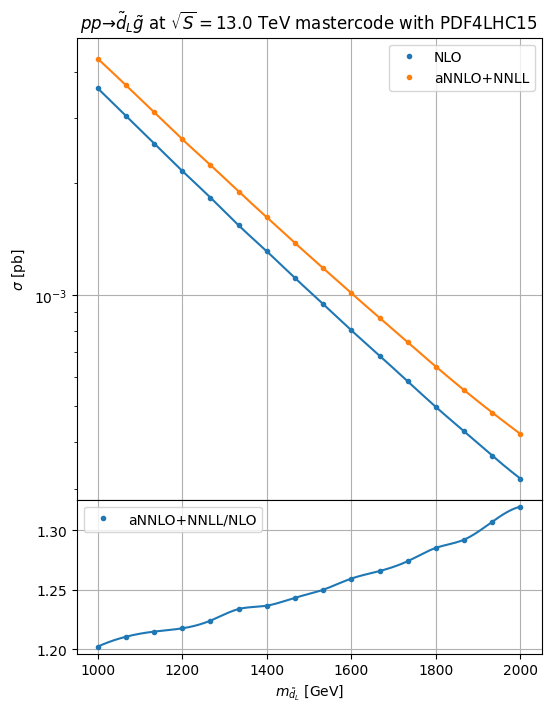

nnll-fast
[1]:
import hepi
print(hepi.__version__)
import smpl
import numpy as np
import hepi.util as util
import matplotlib.pyplot as plt
from hepi.run import nnllfast as nnll
# set the folder where the resummino binary can be found either in either ./{,bin,bin/build}/resummino
nnll.set_path("nnll-fast-1.1")
# By default hepi will run with nice -n5 to prevent overloading the system if more scans than cores are running
#rs.set_pre("") disables any prefixing with nice
print (nnll.get_path())
0.2.10.6
/home/apn/git/nnll-fast/nnll-fast
[6]:
%%time
params = [
"mastercode_with_gm2.in", # baseline slha file in the relative ./output folder by default unless set_output_dir was used
]
pss = [
(1000001,1000021), # Final state particles for resummino to run
]
for pa,pb in pss:
for param in params:
# All the inputs Order, CMS in GeV, particle 1, particle 2, slha, pdf_lo, pdf_nlo,mu_f, mu_r
i = hepi.Input(hepi.Order.aNNLO_PLUS_NNLL,13000,pa,pb,param,"PDF4LHC15","PDF4LHC15",1., 1.,id=1)
li = [i] # li is our list of inputs that we want resummino to run
li = hepi.mass_scan(li,pb, np.linspace(2000,2000,1))
li = hepi.mass_scan(li,pa, np.linspace(1000,2000,16)) # we scan the slepton mass from 100 to 1000 at 15 equidistant points
rs_dl = nnll.run(li,skip=False,n_jobs=1) # run resummino, skipping if the result already exists.
# rs_dl is a panda table(dataframe) with all inputs and result
_,axs = hepi.init_double_plot()
# hepi has some useful plotting routines, but the results from rs_dl can easily be accessed
# Now plot the mass of PDG id pa from the results at LO ,NLO and aNNLO+NLL
hepi.mass_plot(rs_dl,["NLO","aNNLO_PLUS_NNLL"],pa,axes=axs[0],tight=False)
# Plot K factors vs LO and aNNLO+NLL/NLO
hepi.mass_plot(rs_dl,["aNNLO_PLUS_NNLL_OVER_NLO"],pa, yaxis=None, axes=axs[1],logy=False,tight=False)
# construct a title from the inputs
hepi.title(li[0],axs[0],scenario="mastercode")
Skipped: 0 Not skipped: 16
CPU times: user 494 ms, sys: 14.1 ms, total: 508 ms
Wall time: 614 ms

[3]:
rs_dl
[3]:
| LO | NLO | NLO_PLUS_NLL | aNNLO_PLUS_NNLL | K_LO | K_NLO | K_NLO_PLUS_NLL | NLO_PLUS_NLL_OVER_NLO | K_aNNLO_PLUS_NNLL | aNNLO_PLUS_NNLL_OVER_NLO | ... | id | model | mu | mass_1000021 | mass_1000001 | runner | nf_final_state_in | nf_squark_mass | nf_gluino_mass | nf_deg | |
|---|---|---|---|---|---|---|---|---|---|---|---|---|---|---|---|---|---|---|---|---|---|
| 0 | None | 0.00361+/-0 | None | 0.00434+/-0 | None | None | None | None | None | 1.2022160664819945+/-0 | ... | 1 | 1500.000000 | 2000.0 | 1000.000000 | NLLfastRunner-? | sg | 1000.000000 | 2000 | 10 | |
| 1 | None | 0.00304+/-0 | None | 0.00368+/-0 | None | None | None | None | None | 1.2105263157894737+/-0 | ... | 1 | 1533.333333 | 2000.0 | 1066.666667 | NLLfastRunner-? | sg | 1066.666667 | 2000 | 10 | |
| 2 | None | 0.00256+/-0 | None | 0.00311+/-0 | None | None | None | None | None | 1.2148437499999998+/-0 | ... | 1 | 1566.666667 | 2000.0 | 1133.333333 | NLLfastRunner-? | sg | 1133.333333 | 2000 | 10 | |
| 3 | None | 0.00216+/-0 | None | 0.00263+/-0 | None | None | None | None | None | 1.2175925925925926+/-0 | ... | 1 | 1600.000000 | 2000.0 | 1200.000000 | NLLfastRunner-? | sg | 1200.000000 | 2000 | 10 | |
| 4 | None | 0.00183+/-0 | None | 0.00224+/-0 | None | None | None | None | None | 1.2240437158469943+/-0 | ... | 1 | 1633.333333 | 2000.0 | 1266.666667 | NLLfastRunner-? | sg | 1266.666667 | 2000 | 10 | |
| 5 | None | 0.0015400000000000001+/-0 | None | 0.0019+/-0 | None | None | None | None | None | 1.2337662337662336+/-0 | ... | 1 | 1666.666667 | 2000.0 | 1333.333333 | NLLfastRunner-? | sg | 1333.333333 | 2000 | 10 | |
| 6 | None | 0.00131+/-0 | None | 0.00162+/-0 | None | None | None | None | None | 1.2366412213740459+/-0 | ... | 1 | 1700.000000 | 2000.0 | 1400.000000 | NLLfastRunner-? | sg | 1400.000000 | 2000 | 10 | |
| 7 | None | 0.00111+/-0 | None | 0.00138+/-0 | None | None | None | None | None | 1.243243243243243+/-0 | ... | 1 | 1733.333333 | 2000.0 | 1466.666667 | NLLfastRunner-? | sg | 1466.666667 | 2000 | 10 | |
| 8 | None | 0.0009440000000000001+/-0 | None | 0.00118+/-0 | None | None | None | None | None | 1.25+/-0 | ... | 1 | 1766.666667 | 2000.0 | 1533.333333 | NLLfastRunner-? | sg | 1533.333333 | 2000 | 10 | |
| 9 | None | 0.000802+/-0 | None | 0.00101+/-0 | None | None | None | None | None | 1.259351620947631+/-0 | ... | 1 | 1800.000000 | 2000.0 | 1600.000000 | NLLfastRunner-? | sg | 1600.000000 | 2000 | 10 | |
| 10 | None | 0.0006850000000000001+/-0 | None | 0.000867+/-0 | None | None | None | None | None | 1.2656934306569343+/-0 | ... | 1 | 1833.333333 | 2000.0 | 1666.666667 | NLLfastRunner-? | sg | 1666.666667 | 2000 | 10 | |
| 11 | None | 0.000584+/-0 | None | 0.0007440000000000001+/-0 | None | None | None | None | None | 1.2739726027397262+/-0 | ... | 1 | 1866.666667 | 2000.0 | 1733.333333 | NLLfastRunner-? | sg | 1733.333333 | 2000 | 10 | |
| 12 | None | 0.000498+/-0 | None | 0.00064+/-0 | None | None | None | None | None | 1.2851405622489962+/-0 | ... | 1 | 1900.000000 | 2000.0 | 1800.000000 | NLLfastRunner-? | sg | 1800.000000 | 2000 | 10 | |
| 13 | None | 0.000428+/-0 | None | 0.000553+/-0 | None | None | None | None | None | 1.2920560747663552+/-0 | ... | 1 | 1933.333333 | 2000.0 | 1866.666667 | NLLfastRunner-? | sg | 1866.666667 | 2000 | 10 | |
| 14 | None | 0.000368+/-0 | None | 0.000481+/-0 | None | None | None | None | None | 1.3070652173913042+/-0 | ... | 1 | 1966.666667 | 2000.0 | 1933.333333 | NLLfastRunner-? | sg | 1933.333333 | 2000 | 10 | |
| 15 | None | 0.000319+/-0 | None | 0.00042100000000000004+/-0 | None | None | None | None | None | 1.3197492163009406+/-0 | ... | 1 | 2000.000000 | 2000.0 | 2000.000000 | NLLfastRunner-? | sg | 2000.000000 | 2000 | 10 |
16 rows × 43 columns
[ ]: